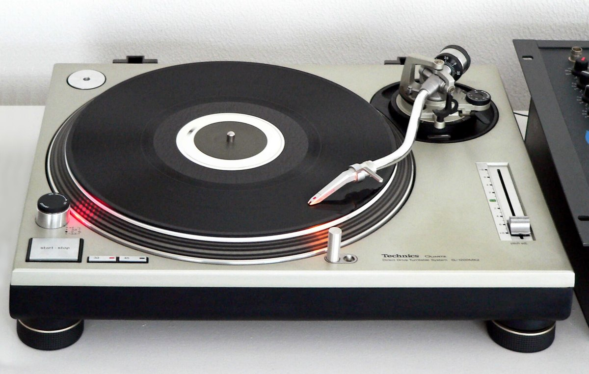

Technics SL-1200MK2
A quartz-locked direct-drive turntable stiff enough to grab — the record itself became a hand-played input medium, and the pitch slider an ear-read tempo control

Overview
The Technics SL-1200 series is a family of direct-drive turntables introduced by Matsushita Electric in October 1972 under the Technics brand, and the MK2, released in summer 1979 (produced until 2010), became the single most influential model. It is a machine for playing records, but it became an interface because its quartz-locked direct-drive motor was stiff and stable enough to survive being grabbed: a DJ can push, pull, backspin, and wiggle the vinyl while the platter holds speed, and the record's pitch and time can be bent by hand without the drive collapsing. The MK2 changed the earlier rotary pitch control to a slider — a continuous, glance-free, ±8% handle on speed that let two records be matched by ear and hand — and fixed the electronic braking so it decelerates as fast as it accelerates, the property that made "pitch riding" usable for beatmatching. What began as a broadcasting and hi-fi turntable was adopted by New York hip-hop DJs in the 1970s and became the standard instrument of DJing, turntablism, and scratching. Over three million units were sold, and an SL-1210MK2 (the black European variant) is held by the Science Museum, London, as one of the technologies that "made the modern world."
Deep dive
The key interaction is physical: the SL-1200's direct-drive motor, controlled by a frequency-generator servo with quartz lock, was designed to deliver accurate, consistent speed immune to the drag of the stylus. That same stiffness is what makes DJ use possible. On a belt-drive deck, dragging the record back slips or stalls the drive; on a 1200, the platter's momentum and closed-loop speed control mean a DJ can place a hand on a spinning record, rock it back and forth, hold it, and release it, and the motor picks the tempo back up. Hip-hop DJs discovered that the motor kept the correct RPM even when they wiggled the record, and scratching grew directly out of that property. This is direct manipulation in its purest embodied form — no screen, no menu, no cursor; the performer's hand is on the data, which is a physical groove moving in real time.
The original 1972 SL-1200 used a rotary pitch control; the MK2 replaced it with a linear slider (plus a quartz-lock button and a 33/45 speed selector). The slider has a mechanical centre detent at 0%, and it gives the user a continuous ±8% range of speed correction. In practice this is a proprioceptive control: experienced DJs "pitch ride" by nudging the slider in small increments while listening to the two records instead of looking at markings, and the slider's physical throw lets a single finger fine-tune the tempo of an entire performance. It is a control whose readout is the ear, not the eye — the opposite of a graphical tempo field.
The MK2's symmetric braking and stable speed made "pitch riding" and "beatmatching" reliable: the DJ lines up the beat of the incoming record with the outgoing one by ear, adjusts the pitch slider until the two lock, then brings the new record in. Slipmats under the record let the platter keep turning while the DJ holds the vinyl still, cueing a track for a clean entry. The whole workflow is a closed loop of body, ear, and spinning mass: hold, listen, nudge, release, align. No other mass-market computing artifact of the era demanded that the operator physically keep time with a rotating medium.
The SL-1200 series is widely credited with influencing the emergence of hip-hop, turntablism, and electronic dance music in the 1980s. Grandmaster Flash and other New York DJs adopted it in the 1970s; the turntable became a musical instrument in its own right, with battles, scratching techniques, and a performance culture built entirely around its tactile behavior. Production of analog Technics turntables was discontinued in 2010 and revived from 2016. The museum's curatorial point is not nostalgia for vinyl but the interaction lesson: a well-designed physical medium can be played like an instrument, and the machine's stability under the hand is the precondition for that freedom.
Team & pioneers
- Shuichi Obata. Led the Matsushita/Technics team that developed the SL-1200, released in 1972; the MK2 followed in 1979.
- Matsushita Electric (Technics). Japanese manufacturer of the SL-1200 series; the MK2 was produced from 1979 to 2010.